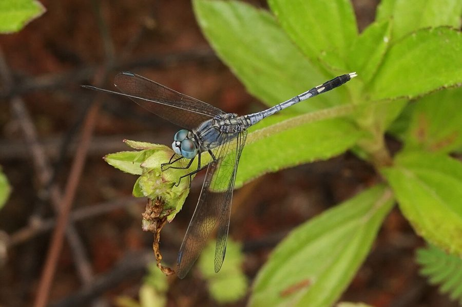

नीली व्याधपतंगGround Skimmer
Diplacodes trivialis · Libellulidae · INS-0027

- Scientific name
- Diplacodes trivialis (Rambur, 1842)
- Family
- Libellulidae
- Hindi
- नीली व्याधपतंग
- Status here
- native
- IUCN
- LC
When to look कब देखें
Present all year.
नीली व्याधपतंग / Ground Skimmer
Diplacodes trivialis (Rambur, 1842) — Libellulidae
नीली व्याधपतंग (ग्राउंड स्किमर) — पूर्वी उत्तर प्रदेश के बगीचों, खेल के मैदानों, पक्के रास्तों और खेतों के किनारे पाई जाने वाली एक छोटी और बहुत ही आम निवासी ड्रैगनफ्लाई है। यह आकार में बहुत छोटी होती है और हवा में ज़्यादा ऊँचा नहीं उड़ती, बल्कि ज़मीन के बिल्कुल पास (low-flying) मँडराती रहती है। इसकी सबसे बड़ी विशेषता यह है कि यह पानी के बजाय सूखी, नंगी ज़मीन, पक्के रास्तों या पत्थरों पर बैठना पसंद करती है (hence the name "ground skimmer")। वयस्क नर का शरीर हल्के नीले रंग (powder-blue) का होता है, जबकि मादा और युवा नर हल्के पीले-भूर रंग के होते हैं जिन पर काले निशान होते हैं। यह हवा में उड़ते हुए छोटे मच्छरों और मक्खियों को पकड़कर खाती है।
Quick Identification त्वरित पहचान
| Feature | Description |
|---|---|
| Size | Small dragonfly; total body length 28–34 mm; wingspan 40–48 mm |
| Male Colouration | Adult male is uniformly powder-blue (pruinose) due to a waxy coating; abdomen tip is black |
| Female & Young | Greenish-yellow with black markings; a clear black dorsal stripe on the abdomen |
| Eyes | Large compound eyes; dark blue/grey in adult males, yellow-green in females |
| Wings | Completely clear and transparent; a small blackish spot (pterostigma) near the tips |
| Behaviour | Frequently perches flat on bare soil, dusty paths, or stone surfaces |
Field tip: Look on dry paths or bare ground in sunny areas. Watch for a tiny powder-blue dragonfly resting directly on the ground. If disturbed, it flies a short distance low to the ground and lands again on the path.
Morphology आकारिकी
Biometrics (typical measurements for adult specimens in local lawns):
| Measurement | Range |
|---|---|
| Total body length | 28–34 mm |
| Hindwing length | 20–24 mm |
| Abdomen length | 18–22 mm |
Body details: The head is broad. In mature males, the compound eyes are dark blue or violet-grey above, fading to green below. In females, the eyes are greenish-yellow. The thorax in males is covered with a waxy, powder-blue coating (pruinescence) that hides the underlying yellow markings. In females and young males, the thorax is greenish-yellow with thin black lines. The abdomen is short, slender, and uniformly powder-blue in mature males (except for segments 8–10, which remain black). In females, the abdomen is yellow-green with a broad black dorsal line.
Behaviour & Ecology व्यवहार और पारिस्थितिकी
Low-flying ground percher.
- Ground perching: Unlike most dragonflies that perch on tall twigs or reeds, this species spends most of its time resting directly on bare soil, dusty farm paths, or dry concrete paths.
- Low flight: Keep their flight path extremely low, usually within 10–30 cm of the ground, flying in short bursts to catch small flies.
- Aggressive territory: Males defend small territories on dry paths, chasing away other males that land nearby.
Ecological Role पारिस्थितिक भूमिका
Benthic and aerial micro-predator.
- Pest consumption: Adults consume thousands of small flying pests (mosquitoes, gnats, and leafhoppers) daily, directly reducing pest densities in agricultural margins.
- Pollution tolerance: The species is highly tolerant of poor water quality, breeding successfully in small roadside puddles and stagnant water bodies.
Life Cycle / Phenology जीवन चक्र
- Breeding: Breeding occurs year-round, peaking in the monsoon and post-monsoon months.
- Egg laying: The female flies low, hovering close to the water surface, and drops her eggs by tapping the abdomen tip on the water. The male does not guard her in tandem during egg-laying.
- Larval stage: The nymph lives in the mud and organic debris of shallow water bodies, growing for 2–4 months before emerging.
Larval (Naiad) Stage
- Naiad appearance: The naiad is very small (12–15 mm long), robust, and muddy-green to brown. The body is smooth and lacks long hairs, with small eyes.
- Habitat: Found in the shallow margins of stagnant ponds, seasonal puddles, and temporary drains.
- Water quality value: Extremely pollution-tolerant. They can survive in highly degraded, muddy, and low-oxygen water bodies, making them a common indicator of disturbed or eutrophic urban wetlands.
Host Plants or Prey आहार
Larval prey:
- Mosquito larvae, small aquatic worms, and protozoa.
Adult prey:
- Flying midges, mosquitoes, houseflies, and small crop pests.
Predators / Natural Enemies शत्रु
- Birds: Small insectivorous birds like flycatchers and wagtails (such as [BRD-0013 White Wagtail]).
- Reptiles: Garden lizards [REP-0001 Oriental Garden Lizard] capture them as they bask on the ground.
- Spiders: Jumping spiders (like [SPD-0003 Pantropical Jumping Spider]) ambush them on paths.
- Other Odonates: Larger dragonflies (such as the Slender Skimmer [INS-0025 Slender Skimmer]) prey on them.
Agricultural / Human Relevance कृषि प्रासंगिकता
Natural mosquito controller.
- Household support: By flying low and hunting in village backyards and gardens, they directly target mosquitoes and gnats near homes, improving human comfort.
- Crop ally: Feed on small crop leafhoppers in rice and vegetable beds without causing any damage to the plants.
Expected Locally स्थानीय रूप से अपेक्षित
Not a field record. Written from published accounts for eastern Uttar Pradesh. No confirmed local sighting yet — if you have seen it, that is what the atlas needs.
अभी तक स्थानीय पुष्टि नहीं। यह विवरण प्रकाशित स्रोतों से है, किसी अवलोकन से नहीं।
Abundant in all blocks of Basti district, particularly near village houses, play fields, and brick kilns (bhatta). They are often seen basking on dry concrete paths and tiles during winter afternoons.
Distribution वितरण
Global range: Widespread across the Indo-Pacific region, covering India, Sri Lanka, China, Southeast Asia, Australia, and the Pacific Islands.
In India: Found throughout the plains and lower hills, one of the most common dragonflies of the country.
In Uttar Pradesh: Abundant resident across all urban, semi-urban, and rural districts.
In Basti district / eastern UP: Observed in all residential and agricultural blocks.
Research Questions शोध प्रश्न
Anyone can investigate these | कोई भी इन प्रश्नों की जाँच कर सकता है
- How long does a Ground Skimmer remain on a dry path before moving to a new perch in Basti gardens? — Record perching durations in different sites.
- What is the preference of Ground Skimmers for perching on dry concrete vs. wet soil? — Conduct counts on different surfaces.
- What is the daily feeding capacity of a Ground Skimmer on mosquitoes? — Conduct feeding trials in a mesh cage.
- How do Ground Skimmers adapt their perching behavior during rainy days when paths are wet? / बारिश के दिनों में जब रास्ते गीले होते हैं, तब नीली व्याधपतंग अपने बैठने के स्थानों को कैसे बदलती है? — Compare perching sites during dry vs. wet weather.
- Does the removal of garden lawn grass lead to a decline in local populations of this dragonfly? / बगीचे की घास हटाने से क्या इस ड्रैगनफ्लाई की स्थानीय आबादी कम हो जाती है? — Compare counts in grassy vs. paved areas.
Similar Species मिलती-जुलती प्रजातियाँ
| Species | Key Difference | हिंदी |
|---|---|---|
| [INS-0025 Slender Skimmer] (Orthetrum sabina) | Much larger; zebra-striped green-black thorax; very slender dumbbell-shaped abdomen; rests on twigs | हरी-चित्तीदार व्याधपतंग — बड़ी, पतली पूँछ |
| Crocothemis servilia (Ruddy Marsh Skimmer) | Male is completely bright red; female is yellowish-brown; broader body; perches on twigs | लाल व्याधपतंग — लाल रंग, तीखी पीठ |
| Brachythemis contaminata (Ditch Jewel) | Orange wings with a broad amber patch; does not perch on ground; lives in stagnant drains | पीली व्याधपतंग — नारंगी पंख, गंदे नाले |
Field rule: Small size, mature male has a powder-blue body with a black tail tip, female is yellow-brown, and habit of perching flat on the bare ground identify the Ground Skimmer.
Taxonomy & Classification वर्गीकरण
Original description. Jules Pierre Rambur described the Ground Skimmer as Libellula trivialis in 1842 in his work Histoire Naturelle des Insectes. Névroptères (p. 115). The type locality was Bombay, India. The genus name Diplacodes combines the Greek diploos (double) and akodon (without teeth), referring to the structure of the male genitalia. The specific name trivialis is Latin for "common" or "ordinary".
Subspecies. Monotypic — no subspecies are currently recognised.
Family and order placement. Placed in the order Odonata, suborder Anisoptera, family Libellulidae.
Phylogenetic notes. Diplacodes trivialis belongs to the genus Diplacodes, which represents a morphologically conserved branch of small, highly adaptable skimmers with widespread Old World distributions.
IUCN status rationale. Listed as Least Concern (LC) globally by the IUCN due to its extremely wide geographic range, high abundance, tolerance of organic pollution, and lack of conservation threats.
Photo Gallery फोटो गैलरी
References संदर्भ
- Rambur, J. P. (1842). Histoire Naturelle des Insectes. Névroptères. Librairie Encyclopédique de Roret, Paris, p. 115. [original description]
- Subramanian, K. A. (2009). Dragonflies of India: A Field Guide. Vigyan Prasar, Noida.
- Fraser, F. C. (1936). The Fauna of British India, including Ceylon and Burma. Odonata. Vol. 3. Taylor and Francis, London.
- Mitra, T. R. (2002). Geographic distribution of Odonata (Insecta) of Eastern India. Memoirs of the Zoological Survey of India, 19(1), 1-208.
- IUCN SSC Odonata Specialist Group (2024). Diplacodes trivialis. IUCN Red List of Threatened Species. Ver. 2024.
- GBIF Occurrence Data — Diplacodes trivialis, Uttar Pradesh (2010–2025).
Source file: species/fauna/insects/ground_skimmer.md